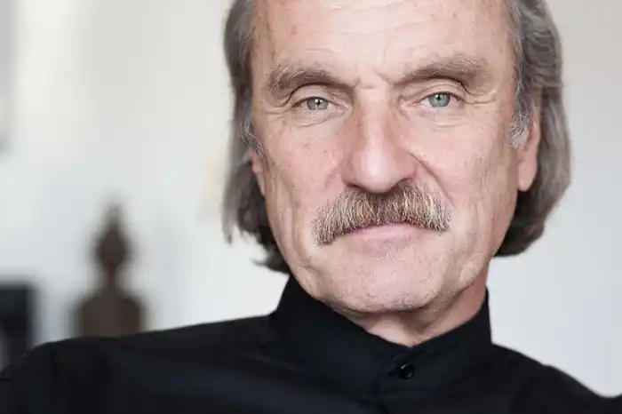
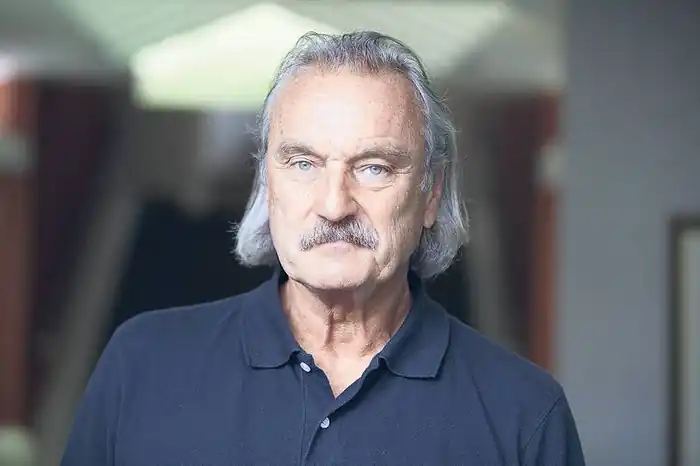

РАНСМАЙР, Крістоф (Ransmayr, Christoph — нар. 20.03.1954, Велс, Австрія) — австрійський письменник. Pансмарт народився у 1954 р. у Велсі (Верхня Австрія), що біля озера Траун, у сім'ї сільського вчителя. У дитинстві він пізнав смак джерельної води, полюбив сувору красу стрімких скель, відчув меланхолійність далеких альпійських хребтів та насолоду тишею. "Мої гори завжди зі мною, їх ви знайдете і в "Останньому світі", — скаже він згодом. До школи ходив у Ройтгамі та Ґмундені, а в містечку Дамбах закінчив Бенедиктинську гімназію. У 1972—1978 pp. Pансмарт студіював філософію та ентомологію у Віденському університеті. Особливо його зацікавила Франкфуртська школа, роботи Т. Адорно та М. Горкгаймера, глибокий слід залишила філософсько-естетична теорія трансцендентального мислення: "Мистецтво — це відблиск того, що недосяжне смерті, туга за чимось зовсім іншим". В університетські роки навчився сумніватися в ідеологічних і догматичних рецептах, розпочав роботу над дисертацією про політичні утопії та відношення індивідуальної свободи до суспільної. Наукову роботу Pансмарт не завершив, оскільки його привабила письменницька діяльність. Про свої переконання Pансмарт говорить, що вони завжди були "лівими", що перевагу він віддавав "гуманістичному розумінню анархізму", а на виборах голосував за "зелених". "Я — наслідок антиавторитарної традиції", — констатує письменник.
Тривалий час Pансмарт працював журналістом, що до певної міри дало йому змогу розв'язувати матеріальні проблеми, але, що найголовніше, відкривало неоціненні можливості спілкуватися та спостерігати, пізнавати життя безпосередньо. Робота над репортажами та есе відшліфувала його стиль, привчила лаконічно, виразно висловлювати думки.
Дебютним твором Pансмарта став роман "Жахіття криги та пітьми" ("Die Schrecken des Eises und der Finsternis"), який вийшов друком у 1984 p. В основу сюжету твору покладена історія дрейфу корабля "Адмірал Теґетхоф", що відкрив у 1872 р. архіпелаг Земля Франца-Йосифа. Вимальовуючи північний пейзаж мінімалістською манерою нотаток звичайних матросів другої половини XIX ст., Р. із дивовижною зримістю відтворює на папері картину подорожі легендарної австро-угорської імператорської експедиції, що намагалися виявити напівміфічний Північний прохід. "Жахіття криги та пітьми" найбільше схожі на дзеркальну кімнату, де підлога стає стелею, а стіни переплітаються одна з одною у безмежжі віддзеркалень. До історії подорожі екіпажу "Адмірала Тагенхофа" Pансмарт додає оповідання про завзятого книжника та мандрівника нашого часу, скромного австрійця з італійським корінням Йозефа Мадзіні, котрий одного чудового дня вирішує повторити похід 1872 р. Третім після Мандзіні стоїть і сам автор, котрий в останній частині книги остаточно зливається з голосами персонажів у змалюванні того, що відбувається. Песимізм і натуралізм, що зазвичай змінюють пафос пригодницької літератури, на щастя, не отримують розвитку в романі, залишаючись лише частиною об'єктивно холодної картини. Сила людського духу, що, як неминучий штамп, виникає у кожному творі про Далеку Північ, панує тут правомірно. Натомість принципово новим у дебютному романі Pансмарта виявляється відображення дарвінізму Дж. Лондона у деталізованому спокої С. Беккета. Проте, спричинивши найбільший резонанс, і найбільшої слави для автора зажив наступний роман Pансмарта — "Останній світ" ("Die letzte Welt", 1988).Історія "Останнього світу "досить незвичайна. Відомий німецький письменник, засновник і видавець серії "Інша бібліотека" Г. М. Енценсбергер звернувся до молодого автора з пропозицією підготувати для видавництва "Ґрено" прозовий переказ славетних "Метаморфоз" Овідія. Pансмарт, працюючи над твором античного поета, інтерпретуючи його, відчув, що виходить за межі просторово-часової структури "Метаморфоз", що вічні образи й теми античної міфології живуть у сучасності... Так з'явився оригінальний задум, своєрідна міфологізація дійсності. В опублікованому згодом "Задумі роману" Pансмарт дав лаконічну характеристику змісту свого твору. "Тема — зникнення і реконструювання літератури, поезії; матеріал — "Метаморфози" Публія Овідія Назона". Образи роману можна поділити на історичні й міфологічні. Коли до перших належить поет Публій Овідій Назон, імператор Октавіан Август та молодий римлянин Котта, то постаті, що складають суспільність Томів, запозичені з Овідієвих "Метаморфоз". Pансмарт додає до свого твору своєрідний довідничок — "Овідіїв репертуар", де коротко характеризує персонажів "Останнюю світу" та їхніх прототипів у давньому світі. У формі енциклопедично стислого викладу австрійський письменник створює невеликий подвійний ескіз до кожного персонажа роману, проводячи паралель між міфологічними та історичними постатями, цитуючи відповідні місця з Овідієвих "Метаморфоз" чи інших літературних та історичних джерел. Письменник подає інтерпретацію персонажів, пояснює їхнє місце в сюжеті та в образній системі, роль у розвитку авторської думки. Давньоримський поет стає центральною постаттю твору. Дія, в якій беруть участь усі персонажі, постійно розігрується навколо особистості Овідія, хоча протягом усього роману він не з'являється жодного разу. Справа не лише в дії. Античний поет — безпосередній натхненник "Останнього світу". Місце вигнання для Овідія — orbis ultimus — край світу, останній світ. Саме з цією метафорою "Скорботних елегій" пов'язує Pансмарт назву свого роману, основна дія якого переноситься до Томів, хоча постійно присутній смисловий зв'язок із Римом. Відбувається протиставлення столиці та периферії. Але "останній світ" австрійського письменника — це не лише край цивілізації, а й по-філософському осмислений постмодерністським світосприйняттям мотив апокаліпсису, осмислення приреченості. Австрійський письменник підступає до найкритичнішого моменту в Овідієвому житті, водночас віддаляючись від нього. Таємниця вигнання породжує нові загадки. Читач перебуває мовби в дзеркальній залі, де його постійно супроводжує відображення виснажених рис вже немолодого поета. Його німа присутність відчувається щомиті. Публій Овідій Назон обертається на спогад. Створюючи власну інтерпретацію Овідієвої долі, Pансмарт свідомо відходить від історичної дійсності. Це виявляється уже в тому, що ймовірною причиною звинувачення поета у версії Pансмарта стають "Метаморфози", а не "Мистецтво кохання". Назон, як називає поета австрійський письменник, справді спалює єдиний примірник поеми перетворень, і цей факт стає стрижнем, навколо якого розвивається дія. Основна увага сконцентровується на протистоянні поета абсолютистському режимові. Самого Октавіана Августа — "імператора і героя світу" змальовано лаконічно й однозначно: це типовий деспот, що втішається усвідомленням своєї влади, годинами споглядаючи її уособлення — носорога (воістину феллінінська символіка!). Картину дійсності для Августа формує "апарат". Поет Публій Овідій Назон для імператора — "промовець під восьмим номером", адже "хто має владу й силу, той книжок не читає". До справжніх історичних осіб належить і протагоніст роману Котта, в античному Римі — Котта Максім Мессалін, один із найдовіреніших адресатів Овідієвих "Послань із Понту". У романі це молодий римлянин, "такий, як багато інших". Він вирушає в подорож на "край світу", щоб знайти зниклого поета, чи принаймні його славетний твір. Мотив, що штовхає Котту на такий вчинок, досить егоїстичний — це звичайне шанолюбство. Крім того, він вирушає до Томів "просто від нудьги". В цьому образі багато сучасного — це і яскраво виражений індивідуалізм та прагматизм, і жадоба вражень та слави. У своїх пошуках Котта конфронтує з незвичайним світом, де в убогому "залізному місті", населення якого складають рудокопи, линварі, різники та крамарки, поступово реконструюються сюжети й образи "Метаморфоз". І саме тут Котта переживає власну "метаморфозу", перероджується: нужденні Томи, ця пряма "інкарнація" Назонової поезії, поступово відкривають перед ним справжні людські цінності, допомагають зрозуміти суть причетності до вічного. Завершальна сцена роману — початок апокаліпсису. Змінюється клімат, усе підвладне ска-м'янінню, спустошенню. На руїнах буяє дика природа. Зникає і твір Овідія, література перетворюється на окремі елементи — слова, написані на клаптиках тканини, які перебирає напівбожевільний Котта. Pансмарта не раз дорікали, що в його романі мало радості, світла, надії. Це подорож у сон, що поступово переходить у марево, жахіття якого стають реальністю. Проте парафраз Р. — в жодному разі не заперечення "Метаморфоз". Як і Овідій, австрійський письменник використовує принцип перетворення не лише як один із мотивів свого твору, а й робить його основним композиційним та смисловим принципом. Запозичену з І книги "Метаморфоз" історію про чотири віки людства, від золотого до залізного, та всесвітній потоп як кару для людей Pансмарт вкладає в уста Ехо. Те, що в античного поета зображено прачасом і розпочинає його епічний твір, у сучасного письменника стає фіналом. Розвиток проходить по колу: під час всесвітньої катастрофи постає увінчане снігом громаддя — Олімп, місце перебування богів. З хаосу народиться нове покоління людей. Котта читає на трахілських каменях долі не тільки колишніх, а й майбутніх мешканців залізного міста. Проте ці нові люди — бездушне покоління "з каменю". Фінал роману досить песимістичний. Минає все, єдине, що залишається, —— це творення. Саме тому й веде сучасний австрійський письменник діалог з античним поетом. Дія в романі — це постійний пошук. Автор вдається, крім того, й до власного пошуку — реконструкції поезії, причому поле дії роману виходить за будь-які часово-просторові обмеження. Основною ідеєю твору є заперечення лінійного розвитку. Мов на полотнах В. Кандінського, духовне матеріалізується у формі кола, відповідаючи поняттю центричного часу: все повторюється, людство не розвивається, а просто існує. Події, змальовані в "Останньому світі", відбуваються і в античності, і в сьогоденні. Сплав минулого, сучасного й майбутнього в єдине ціле набуває позачасових рис. "Епохи позбувалися своїх назв, переходили одна в одну, перетиналися".